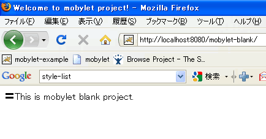
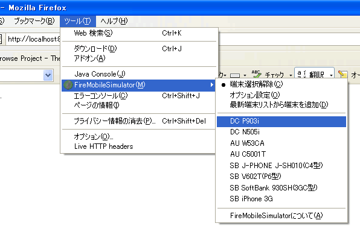
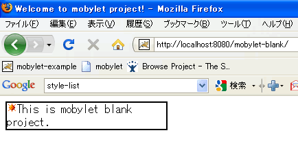

初めての方へ
まず、最初に知って貰いたいことがあります。
それは「mobylet」の基本機能であり、最も強力なツールである「絵文字」の機能です。
セットアップ
「mobylet」を使ったモバイルWebアプリケーション開発に際して必要な
次のアプリケーション/ソフトウェアを開発端末にインストールしてください。
- Firefox ・・・携帯端末を擬似的にエミュレートするために使用するブラウザ
- Fire Mobile Simulator ・・・携帯端末をエミュレートするFirefoxのアドオン
- i絵文字 ・・・docomoの絵文字をバイナリコードで直接入力するためのツール
EclipseやJDKなど、Java開発に必要な基本的なもので
インストールしていないものがあれば、以下のものをインストールして下さい。
- JDK6.0 ・・・JDK6.0以上であればOK
- Tomcat6.0 ・・・他のWebアプリケーションサーバでもOK（説明はTomcatベースで行います）
- Eclipse ・・・お手持ちのバージョンのものでOK
ブランクプロジェクトのインポート
「mobylet」を今すぐ試すことの出来る最小限のブランクプロジェクトを用意しました。
次のリンクからプロジェクトをダウンロードして、Eclipseにインポートしてみてください。
Tomcatのsysdeoプラグインがインストールされている場合、
プロジェクトはインポートした時点でTomcatプロジェクトとして認識されます。
（認識されない場合はお使いの環境毎にプロジェクトをWebアプリケーションに関連付けてください）
Tomcatの設定
TomcatのContextの設定を行います。
Sysdeoのプラグインをご利用の方は、「mobylet-blank」プロジェクトを右クリックして
[Tomcatプロジェクト]→[コンテキスト定義を更新]
を選択することでコンテキストの設定が完了します。
（※[Tomcatプロジェクト]のコンテキストメニューが表示されない場合はEclipseのTomcatの設定を見直してください）
Tomcatの起動と絵文字の表示
Eclipse上からTomcatを起動して、次のURLへアクセスします。
「This is mobylet blank project.」
と表示されていれば問題ありません。
それでは、今表示されているページ（JSP）に絵文字を表示してみましょう。
「mobylet-blank」プロジェクトの「src/main/webapp/」ディレクトリ配下に「index.jsp」があるので、それを開きます。
index.jspに対して、上の絵のように「i絵文字」を使用して太陽の絵文字を直接入力します。
（※実際にはUTF-8で絵文字のバイナリコードが入力されることになります）
Fire Mobile Simulatorで確認
それではFirefoxを立ち上げて、先ほどと同じく次のURLへアクセスします。

ここでは上の絵のように、絵文字が「〓」マークに表示されていればOKです。
「mobylet」ではPCなどのブラウザでアクセスした場合、デフォルトで絵文字を「〓」に変換する機能が備わっています。
逆に言い換えると、mobyletの「絵文字変換機能」が動作している証拠でもあります。
それでは、Fire Mobile Simulatorを利用してdocomoの端末をエミュレートしてみます。
上の絵のように、Fire Mobile Simulatorにデフォルトで設定されている「P903i」を選択して、画面をリフレッシュしてみてください。
このように表示されればOKです。
正しく絵文字が表示されているのが確認できると思います。
（※Fire Mobile Simulator上では絵文字は画像に変換、表示されます）
続いてFire Mobile Simulatorでauの端末「W53CA」を選択して、表示してみてください。

この場合、auの太陽の絵文字に変換されて表示されます（太陽の絵文字の種類がdocomoと少し変わっていると思います）。
mobyletの絵文字変換機能はいかがでしたか？
いかがでしょうか？簡単に絵文字が扱える印象を持っていただけたら幸いです。
この機能は絵文字の表示だけではなく、フォームからの入力にも対応していて
メール送信時にアドレスからキャリアを自動判定して、絵文字を変換したメールを送出する機能もあります。
まだまだこれはmobyletの持つ機能の一部です。
興味が出てきた方は、実際にアプリに組み込んでみたり、チュートリアルを実施してみたりして下さい。
- mobyletを使うための設定方法
- mobyletチュートリアル（Simple Version）
- mobyletチュートリアル（SAStruts Version）※只今準備中
- mobyletチュートリアル（GAE/J Version）※只今準備中
mobylet projectチームは、「mobylet」を使った 素敵なモバイルWebアプリケーションが出来上がることを夢に見ています。